건축산업기사 (2019-08-04 기출문제)
1과목: 건축계획
1. 편복도형 아파트에 관한 설명으로 옳은 것은?
- 부지의 이용률이 가장 높다.
- 중복도형에 비해 독립성이 우수하다.
- 중복도형에 비해 통풍, 채광상 불리하다.
- 통행을 위한 공용 면적이 작아 건축물의 이용도가 가장 높다.
(정답률: 68%)

2. 학교운영방식 중 교과교실형(V형)에 관한 설명으로 옳지 않은 것은?
- 일반 교실수가 학급수와 동일하다.
- 학생의 동선처리에 주의하여야 한다.
- 학생 개인 물품의 보관 장소에 대한 고려가 요구된다.
- 각 교과 전문의 교실이 주어지므로 시설의 질이 높아진다.
(정답률: 81%)
3. 다음 중 단독주택에서 현관의 위치 결정에 가장 주된 영향을 끼치는 것은?
- 방위
- 건폐율
- 도로의 위치
- 대지의 면적
(정답률: 86%)
4. 쇼핑센터를 구성하는 주요 요소에 속하지 않는 것은?
- 핵점포
- 몰(Mall)
- 터미널(Terminal)
- 전문점
(정답률: 81%)
5. 사무소 건축의 기준층 층고의 결정 요인과 가장 관계가 먼 것은?
- 채광
- 사무실의 깊이
- 엘리베이터 설치대수
- 공기조화(Air Conditioning)
(정답률: 81%)
6. 유니버셜 스페이스(Universal Space) 설계이론을 주창한 건축가는?
- 알바 알토
- 르 꼬르뷔제
- 미스 반 데어 로에
- 프랭크 로이드 라이트
(정답률: 66%)
7. 복층형 아파트에 관한 설명으로 옳은 것은?
- 소규모 주택에 유리하다.
- 다양한 평면구성이 가능하다.
- 엘리베이터가 정지하는 층수가 많아진다.
- 플랫형에 비해 복도면적이 커서 유효면적이 작다.
(정답률: 71%)
8. 다음 중 일반적인 주택의 부엌에서 냉장고, 개수대, 레인지를 연결하는 작업삼각형의 3변의 길이의 합으로 가장 적정한 것은?
- 2.5m
- 5.0m
- 7.2m
- 8.8m
(정답률: 75%)
9. 다음 중 근린분구의 중심시설에 속하지 않는 것은?
- 약국
- 유치원
- 파출소
- 초등학교
(정답률: 70%)
10. 한식주택은 좌식의 특징, 양식주택은 입식의 특징을 갖고 있다. 이러한 차이가 발생하는 가장 근본적인 원인은?
- 출입 방식
- 난방 방식
- 채광 방식
- 환기 방식
(정답률: 86%)
11. 주택계획에서 거실은 분리하며, 주방과 식당이 공용으로 구성된 소규모의 평면형식은?
- K형
- DK형
- LD형
- LDK형
(정답률: 83%)
12. 학교 교실의 배치형식 중 엘보우 엑세스형(Elbow Access Type)에 관한 설명으로 옳지 않은 것은?
- 학습의 순수율이 높다.
- 복도의 면적이 증가된다.
- 채광 및 통풍 조건이 양호하다.
- 교실을 소규모 단위로 분할, 배치한 형식이다.
(정답률: 55%)
13. 상점 계획에서 파사드 구성에 요구되는 5가지 광고요소(AIDMA 법칙)에 속하지 않는 것은?
- Attention
- Interest
- Desire
- Moment
(정답률: 78%)
14. 공장건축의 레이아웃(layout) 계획에 관한 설명으로 옳지 않은 것은?
- 고정식 레이아웃은 조선소와 같이 제품이 크고 수량이 적은 경우에 행해진다.
- 레이아웃은 공장규모의 변화에 대응할 수 있도록 충분한 융통성을 부여하여야 한다.
- 공장건축에 있어서 이용자의 심리적인 요구를 고려하여 내부환경을 결정하는 것을 의미한다.
- 작업장내의 기계설비, 작업자의 작업구역, 자재나 제품 두는 곳 등에 대한 상호관계의 검토가 필요하다.
(정답률: 73%)
15. 학교건축의 음악교실계획에 관한 설명으로 옳지 않은 것은?
- 강당과 연락이 좋은 위치를 택한다.
- 시청각 교실과 유기적인 연결을 꾀하도록 한다.
- 실내는 잔향시간을 없게 하기 위해 흡음재로 마감한다.
- 학습 중 다른 교실에 방해가 되지 않기 위해 방음시설이 필요하다.
(정답률: 64%)
16. 사무소 건축의 코어 형식에 관한 설명으로 옳은 것은?
- 외코어형은 방재상 가장 유리한 형식이다.
- 편심코어형은 바닥면적이 큰 경우 적합하다.
- 중심코어형은 사무소 건축의 외관이 획일적으로 되기 쉽다.
- 양단코어형은 코어의 위치를 사무소 평면상의 어느 한쪽에 편중하여 배치한 유형이다.
(정답률: 74%)
17. 상점 바닥면 계획에 관한 설명으로 옳지 않은 것은?
- 미끄러지거나 요철이 없도록 한다.
- 소음발생이 적은 바닥재를 사용한다.
- 외부에서 자연스럽게 유도될 수 있도록 한다.
- 상품이나 진열설비와 무관하게 자극적인 색채로 한다.
(정답률: 86%)
18. 사무소 건축의 실단위 계획 중 개실시스템에 관한 설명으로 옳지 않은 것은?
- 개인적 환경조절이 용이하다.
- 소음이 많고 독립성이 결여된다.
- 방 깊이에는 변화를 줄 수 없다.
- 개방식 배치에 비해 공사비가 높다.
(정답률: 72%)
19. 연립주택에 관한 설명으로 옳지 않은 것은?
- 중정형 주택은 중정을 아트리움으로 구성하는 관계로 아트리움 주택이라고도 한다.
- 로우 하우스는 지형조건에 따라 다양한 배치 및 집약적인 공동 설비 배치가 가능하다.
- 테라스 하우스는 경사지를 적절하게 이용할 수 있으며, 각 호마다 전용의 정원을 갖는다.
- 타운 하우스는 도로에서 2층으로 진입하므로 2층은 생활공간, 1층은 수면공간의 공간구성을 갖는다.
(정답률: 75%)
20. 다음 중 고층 사무소 건축에서 층고를 낮게 하는 이유와 가장 관계가 먼 것은?
- 공사비를 낮추기 위해
- 보다 넓은 설비공간을 얻기 위해
- 실내의 공기조화 효율을 높이기 위해
- 제한된 건물 높이에서 가급적 많은 수의 층을 얻기 위해
(정답률: 63%)
2과목: 건축시공
21. 골재의 함수상태에 관한 설명으로 옳지 않은 것은?
- 흡수량 : 표면건조내부포화상태 - 절건상태
- 유효흡수량 : 표면건조내부포화상태 - 기건상태
- 표면수량 : 습윤상태 - 기건상태
- 함수량 : 습윤상태 - 절건상태
(정답률: 63%)
22. 거푸집에 활용하는 부속재료에 관한 설명으로 옳지 않은 것은?
- 폼타이는 거푸집 패널을 일정한 간격으로 양면을 유지시키고 콘크리트 측압을 지지하기 위한 것이다.
- 웨지핀은 시스템거푸집에 주로 사용되며, 유로폼에는 사용되지 않는다.
- 컬럼밴드는 기둥거푸집의 고정 및 측압 버팀용도로 사용된다.
- 스페이서는 철근의 피복두께를 확보하기 위한 것이다.
(정답률: 55%)
23. 표준시방서에 따른 시멘트 액체방수층의 시공순서로 옳은 것은? (단, 바닥용의 경우)
- 방수시멘트 페이스트 1차→바탕면정리 및 물청소→방수액 침투→방수시멘트 페이스트 2차→방수 모르타르
- 바탕면정리 및 물청소→방수시멘트 페이스트 1차→방수액 침투→방수시멘트 페이스트 2차→방수 모르타르
- 바탕면정리 및 물청소→방수액 침투→방수시멘트 페이스트 1차→방수시멘트 페이스트 2차→방수 모르타르
- 바탕면정리 및 물청소→방수시멘트 페이스트 1차→방수 모르타르→방수시멘트 페이스트 2차→방수액 침투
(정답률: 67%)
24. 조적공사에서 벽돌벽을 1.0B로 시공할 때 m2당 소요되는 모르타르 양으로 옳은 것은? (단, 표준형 벽돌 사용, 모르타르의 재료량은 할증이 포함된 것이며, 배합비는 1:3이다.)
- 0.019m3
- 0.033m3
- 0.049m3
- 0.079m3
(정답률: 50%)
25. 매스 콘크리트 공사 시 콘크리트 타설에 관한 설명으로 옳지 않은 것은?
- 매스 콘크리트의 타설 시간 간격은 균열제어의 관점으로부터 구조물의 형상과 구속조건에 따라 적절히 정하여야한다.
- 온도 변화에 의한 응력은 신구 콘크리트의 유효탄성계수 및 온도차이가 크면 클수록 커지므로 신구 콘크리트의 타설 시간 간격을 지나치게 길게 하는 일은 피하여야 한다.
- 매스 콘크리트의 타설온도는 온도균열을 제어하기 위한 관점에서 평균 온도 이상으로 가져가야 한다.
- 매스 콘크리트의 균열방지 및 제어방법으로는 팽창 콘크리트의 사용에 의한 균열방지방법, 또는 수축·온도철근의 배치에 의한 방법 등이 있다.
(정답률: 62%)
26. 공사 계약제도에 관한 설명으로 옳지 않은 것은?
- 직영제도 : 공사의 전체를 단 한사람에게 도급주는 제도
- 분할도급 : 전문적인 공사는 분리하여 전문업자에게 주는 제도
- 단가도급 : 단가를 정하고 공사 수량에 따라 도급금액을 산출하는 제도
- 정액도급 : 도급전액을 일정액으로 정하여 계약하는 제도
(정답률: 67%)
27. 연약한 점성토 지반에 주상의 투수층인 모래말뚝을 다수 설치하여 그 토층 속의 수분을 배수하여 지반의 압밀, 강화를 도모하는 공법은?
- 샌드 드레인 공법
- 웰 포인트 공법
- 바이브로 콤포저 공법
- 시멘트 주입 공법
(정답률: 72%)
28. 목재의 접합방법과 가장 거리가 먼 것은?
- 맞춤
- 이음
- 쪽매
- 압밀
(정답률: 70%)
29. 목재의 일반적인 특징에 관한 설명으로 옳지 않은 것은?
- 장대재를 얻기 쉽고, 다른 구조재료에 비하여 가볍다.
- 열전도율이 적으므로 방한·방서성이 뛰어나다.
- 건습에 의한 신축변형이 심하다.
- 부패 및 충해에 대한 저항성이 뛰어나다.
(정답률: 75%)
30. 아스팔트를 천연아스팔트와 석유아스팔트로 구분할 때 석유아스팔트에 해당하는 것은?
- 블로운 아스팔트
- 로크 아스팔트
- 레이크 아스팔트
- 아스팔타이트
(정답률: 57%)
31. 공사기간 단축기법으로 주공정상의 소요 작업 중 비용구배(cost slope)가 가장 작은 단위작업부터 단축해 나가는 것은?
- MCX
- CP
- PERT
- CPM
(정답률: 55%)
32. 표준관입시험에 관한 설명으로 옳지 않은 것은?
- 사질토 지반에 적합하다.
- 사운딩 시험의 일종이다.
- N값이 클수록 흙의 상태는 느슨하다고 볼 수 있다.
- 낙하시키는 추의 무게는 63.5kg이다.
(정답률: 67%)
33. 다음은 철근인장실험 결과 나타난 철근의 응력-변형률 곡선을 나타내고 있다. 철근의 인장 강도에 해당하는 것은?
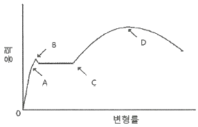
- A
- B
- C
- D
(정답률: 56%)
34. 현장타설 콘크리트말뚝공법 중 리버스서큘레이션(Reverse Circulation Drill) 공법에 관한 설명으로 옳지 않은 것은?
- 유연한 지반부터 암반까지 굴착 가능하다
- 시공심도는 통상 70m까지 가능하다
- 굴착에 있어 안정액으로 벤토나이트 용액을 사용한다.
- 시공직경은 0.9~3m 정도이다.
(정답률: 51%)
35. 수성페인트에 관한 설명으로 옳지 않은 것은?
- 취급이 간단하고 건조가 빠른 편이다.
- 콘크리트나 시멘트 벽 등에 주로 사용한다.
- 에멀션페인트는 수성페인트의 한 종류이다.
- 안료를 적은 양의 보일유로 용해하여 사용한다.
(정답률: 56%)
36. 다음 중 서로 관계가 없는 것끼리 짝지어진 것은?
- 바이브레이터(vibrator) - 목공사
- 가이데릭(guy derrick) - 철골공사
- 그라인더(grinder) - 미장공사
- 토털 스테이션(total station) - 부지측량
(정답률: 64%)
37. 다음 중 목재의 무늬를 아름답게 나타낼 수 있는 재료는?
- 유성 페인트
- 바니쉬
- 수성 페인트
- 에나멜 페인트
(정답률: 70%)
38. 개선(beveling)이 있는 용접부위 양끝의 완전한 용접을 하기 위해 모재의 양단에 부착하는 보조강판은?
- Scallop
- Back Strip
- End Tap
- Crater
(정답률: 71%)
39. 알루미늄 창호에 관한 설명으로 옳지 않은 것은?
- 녹슬지 않아 사용연한이 길다.
- 가공이 용이하다.
- 모르타르에 직접 접촉시켜도 무방하다.
- 철에 비해 가볍다.
(정답률: 65%)
40. 굳지 않는 콘크리트의 측압에 관한 설명으로 옳은 것은?
- 슬럼프가 클수록 측압이 크다.
- 타설속도가 빠를수록 측압은 작아진다.
- 온도가 높을수록 측압은 커진다.
- 벽두께가 얇을수록 측압은 커진다.
(정답률: 52%)
3과목: 건축구조
41. 지지상태는 양단 고정이며, 길이 3m인 압축력을 받는 원형강관 Φ-89.1×3.2의 탄성좌굴하중을 구하면? (단, I = 79.8×104mm4, E = 210000MPa이다.)
- 184kN
- 735kN
- 1018kN
- 1532kN
(정답률: 36%)
42. 강구조에 관한 설명으로 옳지 않은 것은?
- 재료가 균질하며 세장한 부재가 가능하다.
- 처짐 및 진동을 고려해야 한다.
- 인성이 커서 변형에 유리하고 소성변형 능력이 우수하다.
- 좌굴의 영향이 작다.
(정답률: 54%)
43. 다음의 조건을 가진 반T형보의 유효폭 B의 값은?
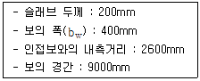
- 1150mm
- 1270mm
- 1600mm
- 1700mm
(정답률: 39%)
44. 그림과 같은 1차 부정정 라멘에서 A점 및 B점의 수평반력의 크기로 옳은 것은?
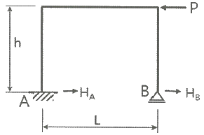
- HA = P/2, HB = P/2
- HA = P, HB = P
- HA = P, HB = 0
- HA = 0, HB = P
(정답률: 54%)
45. 기초구조에 관한 설명으로 옳지 않은 것은?
- 기초구조란 기초 슬래브와 지정을 총칭한 것이다.
- 경미한 구조라도 기초의 저면은 지하동결선 이하에 두어야 한다.
- 온통기초는 연약지반에 적용되기 어렵다.
- 말뚝기초는 지지하는 상태에 따라 마찰말뚝과 지지말뚝으로 구분된다.
(정답률: 56%)
46. 강도설계법에서 인장측에 3042mm2, 압축측에 1014mm2의 철근이 배근되었을 때 압축응력 등가블럭의 깊이로 옳은 것은? (단, fck=21MPa, fy=400MPa, 보의 폭 b=300mm이다.)
- 125.7mm
- 151.5mm
- 227.7mm
- 303.1mm
(정답률: 44%)
47. 그림과 같은 보의 최대 전단응력으로 옳은 것은?
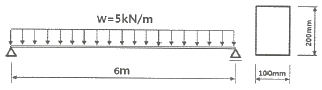
- 1.125MPa
- 2.564MPa
- 3.496MPa
- 4.253MPa
(정답률: 41%)
48. 그림과 같은 겔버보에서 B점의 반력은?
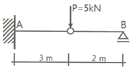
- 2.5kN
- 5kN
- 10kN
- 0
(정답률: 39%)
49. 철근콘크리트부재의 인장이형철근 및 이형철선의 기본정착길이 ldb를 구하는 식은?
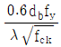
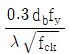
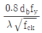
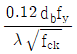
(정답률: 57%)
50. 그림에서 필릿용접 이음부의 용접유효면적(Aw)으로 옳은 것은?
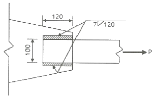
- 907mm2
- 1039mm2
- 1484mm2
- 1680mm2
(정답률: 44%)
51. 그림과 같은 구조물의 강절점수를 구하면?
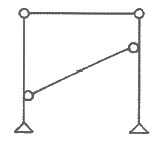
- 0
- 1
- 2
- 3
(정답률: 64%)
52. 다음 그림과 같은 단순보에서 C점에 대한 휨응력은?
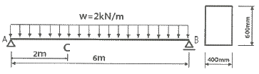
- 1.33MPa
- 1.00MPa
- 0.67MPa
- 0.33MPa
(정답률: 29%)
53. 철근콘크리트 구조물의 구조설계 시 적용되는 강도감소계수(ø)로 옳지 않은 것은?
- 콘크리트의 지압력(포스트텐션 정착부나 스트럿-타이 모델은 제외) : 0.75
- 압축지배단면 중 나선철근 규정에 따라 나선철근으로 보강된 철근콘크리트 부재 : 0.70
- 전단력과 비틀림모멘트 : 0.75
- 인장지배단면 : 0.85
(정답률: 38%)
54. 그림과 같은 구조물의 C점에 20kN의 수평력이 작용할 때 S부재에 발생하는 응력의 값은?
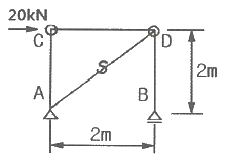
- 10 kN
- 10√2 kN
- 20 kN
- 20√2 kN
(정답률: 46%)
55. 그림과 같이 빗금친 도형의 밑변을 지나는 X-X축에 대한 단면1차모멘트의 값은?
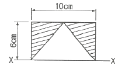
- 30cm3
- 60cm3
- 120cm3
- 180cm3
(정답률: 46%)
56. 그림과 같은 단순보에서 C점의 처짐 δ는? (단, 보의 단면은 200mm×300mm, 탄성계수 E = 104MPa이다.)
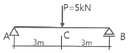
- 3mm
- 4mm
- 5mm
- 6mm
(정답률: 43%)
57. 강구조 주각에 관한 설명으로 옳지 않은 것은?
- 주각의 형태에는 핀주각, 고정주각, 매입형주각이 있다.
- 주각은 기둥의 하중과 모멘트를 기초를 통하여 지반에 전달한다.
- 베이스플레이트는 기초 콘크리트면에 무수축 모르타르의 충전 없이 직접 밀착시켜야 한다.
- 베이스플레이트는 기초 콘크리트에 지압응력이 잘 분포되도록 충분한 면적과 두께를 가져야 한다.
(정답률: 62%)
58. fck=24MPa이고, 단면이 200×300mm인 보의 균열모멘트를 구하면? (단, 보통중량콘크리트 사용)
- 7.58kN·m
- 9.26kN·m
- 11.48kN·m
- 13.26kN·m
(정답률: 33%)
59. 철근콘크리트슬래브에 관한 설명으로 옳지 않은 것은?
- 1방향슬래브 두께는 최소 100mm 이상으로 하여야 한다.
- 1방향슬래브에서는 정모멘트철근 및 부모멘트철근에 직각방향으로 수축·온도철근을 배치하여야 한다.
- 슬래브 끝의 단순받침부에서도 내민슬래브에 의하여 부모멘트가 일어나는 경우에는 이에 상응하는 철근을 배치하여야 한다.
- 주열대는 기둥 중심선을 기준으로 양쪽으로 장변 또는 단변길이의 0.25를 곱한 값 중 큰 값을 한쪽의 폭으로 하는 슬래브의 영역을 가리킨다.
(정답률: 39%)
60. C점의 전단력이 0이 되려면 P의 값은 얼마가 되어야 하는가?
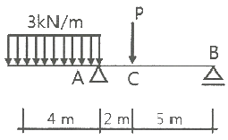
- 9kN
- 12kN
- 13.5kN
- 15kN
(정답률: 45%)
4과목: 건축설비
61. 열매인 증기의 온도가 102℃이고, 실내온도가 18.5℃인 표준상태에서 방열기 표면적을 1m2를 통하여 발산되는 방열량은?
- 450W
- 523W
- 650W
- 756W
(정답률: 45%)
62. 양수량이 2m3/min인 펌프에서 회전수를 원래 보다 20% 증가시켰을 경우 양수량은 얼마로 되는가?
- 1.7m3/min
- 2.4m3/min
- 2.9m3/min
- 3.5m3/min
(정답률: 62%)
63. 온수의 순환방식에 따른 온수난방방식의 분류에서 온수의 밀도차를 이용하는 방식은?
- 단관식
- 하향식
- 개방식
- 중력식
(정답률: 59%)
64. 중앙식 급탕방식 중 간접가열식에 관한 설명으로 옳지 않은 것은?
- 일반적으로 규모가 큰 건물에 사용된다.
- 가열 보일러는 난방용 보일러와 겸용할 수 없다.
- 저탕조는 가열코일을 내장하는 등, 직접가열식에 비해 구조가 복잡하다.
- 증기보일러 또는 고온수보일러를 사용하는 경우 고온의 탕을 얻을 수 없다.
(정답률: 47%)
65. 다음 중 오물정화조의 성능을 나타내는데 주로 사용되는 지표는?
- 경도
- 탁도
- CO2 함유량
- BOD 제거율
(정답률: 67%)
66. 다음의 공기조화방식 중 전공기방식에 속하지 않는 것은?
- 단일덕트방식
- 2중덕트방식
- 멀티존 유닛방식
- 팬코일 유닛방식
(정답률: 62%)
67. 급수방식에 관한 설명으로 옳은 것은?
- 압력수조방식은 경제적이며 공급압력이 일정하다.
- 펌프직송방식은 정교한 제어가 필요하며 전력차단 시 급수가 불가능하다.
- 수도직결방식은 공급압력이 일정하여 고층건물에 주로 사용된다.
- 고가수조방식은 수질오염성이 가장 낮은 방식으로 단수시 일정 시간 동안 급수가 가능하다.
(정답률: 55%)
68. 다음 중 물체의 부력을 이용하여 그 기능이 발휘되는 것은?
- 볼탭
- 체크밸브
- 배수트랩
- 스트레이너
(정답률: 55%)
69. 다음과 같은 벽체에서 관류에 의한 열손실량은?
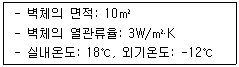
- 360W
- 540W
- 780W
- 900W
(정답률: 53%)
70. 중앙식 공기조화기에 전열교환기를 설치하는 가장 주된 이유는?
- 소음제거
- 에너지 절약
- 공기오염 방지
- 백연현상 방지
(정답률: 63%)
71. 금속관 공사에 관한 설명으로 옳지 않은 것은?
- 외부에 대한 고조파 영향이 없다.
- 열적 영향을 받는 곳에서는 사용할 수 없다.
- 외부적 응력에 대해 전선보호에 신뢰성이 높다.
- 사용장소는 은폐장소, 노출장소, 옥내, 옥외 등 광범위하게 사용할 수 있다.
(정답률: 55%)
72. 통기관에 관한 설명으로 옳지 않은 것은?
- 통기관은 가능한 관길이를 짧게 하고 굴곡 부분을 적게 한다.
- 신정통기관의 관경은 배수수직관의 관경보다 작게 해서는 안된다.
- 통기관의 배관길이를 길게 하면 저항이 작아지므로 관경을 줄일 수 있다.
- 통기관의 관경은 접속되는 배수관의 관경이나 기구배수부하단위수에 의해 구할 수 있다.
(정답률: 59%)
73. 층수가 5층인 건물의 각층에 옥내소화전이 2개씩 설치되어 있을 때, 옥내소화전설비의 수원의 저수량은 최소 얼마 이상이 되도록 하여야 하는가?
- 1.3m3
- 2.6m3
- 4.3m3
- 5.2m3
(정답률: 48%)
74. 건구온도 26℃인 공기 1000m3과 건구온도 32℃인 공기 500m3를 단열혼합하였을 경우, 혼합공기의 건구온도는?
- 27℃
- 28℃
- 29℃
- 30℃
(정답률: 54%)
75. 교류전동기에 속하지 않는 것은?
- 동기전동기
- 복권전동기
- 3상 유도전동기
- 분상 기동형전동기
(정답률: 57%)
76. 다음의 전원설비와 관련된 설명 중 ( )안에 알맞는 용어는?
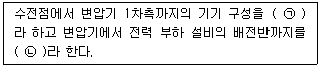
- ㉠ : 배전설비, ㉡: 수전설비
- ㉠ : 수전설비, ㉡: 배전설비
- ㉠ : 간선설비, ㉡: 동력설비
- ㉠ : 동력설비, ㉡: 간선설비
(정답률: 67%)
77. 다음 중 버큠 브레이커나 역류 방지기능을 가지는 것을 설치할 필요가 있는 위생기구는?
- 욕조
- 세면기
- 대변기(세정밸브형)
- 소변기(세정탱크형)
(정답률: 67%)
78. 단일덕트 변풍량 방식에 관한 설명으로 옳지 않은 것은?
- 송풍량을 조절할 수 있다.
- 전공기방식의 특성이 있다.
- 각 실이나 존의 개별제어가 불가능하다.
- 일사량 변화가 심한 페리미터 존에 적합하다.
(정답률: 53%)
79. 도시가스의 압력을 사용처에 맞게 감압하는 기능을 하는 것은?
- 정압기
- 압송기
- 에어챔버
- 가스미터
(정답률: 56%)
80. 각종 조명방식에 관한 설명으로 옳지 않은 것은?
- 간접조명방식은 확산성이 낮고 균일한 조도를 얻기 어렵다.
- 반간접조명방식은 직접조명방식에 비해 글레어가 작다는 장점이 있다.
- 직접조명방식은 작업면에서 높은 조도를 얻을 수 있으나 주위와의 휘도차가 크다.
- 반직접조명방식은 광원으로부터의 발산 광속 중 10~40%가 천장이나 윗벽 부분에서 반사된다.
(정답률: 49%)
5과목: 건축관계법규
81. 문화 및 집회시설 중 공연장의 개별관람석 출구에 관한 기준 내용으로 옳지 않은 것은? (단, 개별관람석의 바닥면적이 300m2 이상인 경우)
- 관람석별로 2개소 이상 설치할 것
- 각 출구의 유효너비는 1.5m 이상일 것
- 바깥쪽으로의 출구로 쓰이는 문은 안여닫이로 할 것
- 개별관람석 출구의 유효너비의 합계는 개별 관람석의 바닥면적 100m2마다 0.6m의 비율로 산정한 너비 이상으로 할 것
(정답률: 65%)
82. 다음은 건축선에 따른 건축제한에 관한 기준 내용이다. ( ) 안에 알맞은 것은?
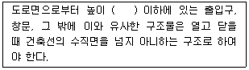
- 3.5m
- 4m
- 4.5m
- 5m
(정답률: 59%)
83. 건축물의 피난층 또는 피난층의 승강장으로부터 건축물의 바깥쪽에 이르는 통로에, 관련 기준에 따른 경사로를 설치하여야 하는 대상 건축물에 속하지 않는 것은? (단, 건축물의 층수가 5층인 경우)
- 교육연구시설 중 학교
- 연면적이 5000m2인 종교시설
- 연면적이 5000m2인 판매시설
- 연면적이 5000m2인 운수시설
(정답률: 31%)
84. 다음 중 기계식주차장에 속하지 않는 것은?
- 지하식
- 지평식
- 건축물식
- 공작물식
(정답률: 64%)
85. 건축법령에 따른 공사감리자의 수행 업무가 아닌 것은?
- 공정표의 검토
- 상세시공도면의 작성
- 공사현장에서의 안전관리의 지도
- 시공계획 및 공사관리의 적정여부의 확인
(정답률: 67%)
86. 부설주차장의 설치대상 시설물이 판매시설인 경우 설치기준으로 옳은 것은?
- 시설면적 100m2당 1대
- 시설면적 150m2당 1대
- 시설면적 200m2당 1대
- 시설면적 350m2당 1대
(정답률: 58%)
87. 제1종 일반주거지역안에서 건축할 수 없는 건축물은?
- 아파트
- 다가구주택
- 다세대주택
- 제1종 근린생활시설
(정답률: 64%)
88. 건축물의 설비기준 등에 관한 규칙의 기준 내용에 따라 피뢰설비를 설치하여야 하는 대상 건축물의 높이 기준으로 옳은 것은?
- 10m 이상
- 20m 이상
- 25m 이상
- 30m 이상
(정답률: 65%)
89. 다음 중 다중이용건축물에 속하지 않는 것은? (단, 층수가 10층인 건축물의 경우)
- 판매시설의 용도로 쓰는 바닥면적의 합계가 5000m2인 건축물
- 종교시설의 용도로 쓰는 바닥면적의 합계가 5000m2인 건축물
- 의료시설 중 종합병원의 용도로 쓰는 바닥면적의 합계가 5000m2인 건축물
- 숙박시설 중 일반숙박시설의 용도로 쓰는 바닥면적의 합계가 5000m2인 건축물
(정답률: 50%)
90. 건축물의 면적 산정방법의 기본 원칙으로 옳지 않은 것은?
- 대지면적은 대지의 수평투영면적으로 한다.
- 연면적은 하나의 건축물 각 층의 거실면적의 합계로 한다.
- 건축면적은 건축물의 외벽의 중심선으로 둘러싸인 부분의 수평투영면적으로 한다.
- 바닥면적은 건축물의 각 층 또는 그 일부로서 벽, 기둥, 그 밖에 이와 비슷한 구획의 중심선으로 둘러싸인 부분의 수평투영면적으로 한다.
(정답률: 55%)
91. 각 층의 거실면적이 1000m2인 15층 아파트에 설치하여야 하는 승용승강기의 최소 대수는? (단, 승용승강기는 15인승임)
- 2대
- 3대
- 4대
- 5대
(정답률: 37%)
92. 건축허가를 하기 전에 건축물의 구조안전과 인접 대지의 안전에 미치는 영향 등을 평가하는 건축물 안전영향평가를 실시하여야 하는 대상 건축물 기준으로 옳은 것은?
- 고층 건축물
- 초고층 건축물
- 준초고층 건축물
- 다중이용 건축물
(정답률: 54%)
93. 노외주차장 내부 공간의 일산화탄소 농도는 주차장을 이용하는 차량이 가장 빈번한 시각의 앞뒤 8시간의 평균치가 최대 얼마 이하로 유지되어야 하는가? (단, 다중이용시설 등의 실내공기질관리법에 따른 실내주차장이 아닌 경우)
- 30피피엠
- 40피피엠
- 50피피엠
- 60피피엠
(정답률: 51%)
94. 다음 중 건축물의 대지에 공개 공지 또는 공개 공간을 확보하여야 하는 대상 건축물에 속하지 않는 것은? (단, 해당 용도로 쓰는 바닥면적의 합계가 5000m2인 건축물의 경우)
- 종교시설
- 의료시설
- 업무시설
- 문화 및 집회시설
(정답률: 45%)
95. 거실의 반자높이를 최소 4m 이상으로 하여야 하는 대상에 속하지 않는 것은? (단, 기계환기장치를 설치하지 않은 경우)
- 종교시설의 용도에 쓰이는 건축물의 집회실로서 그 바닥면적이 200m2 이상인 것
- 위락시설 중 유흥주점의 용도에 쓰이는 건축물의 집회실로서 그 바닥면적이 200m2 이상인 것
- 문화 및 집회시설 중 전시장의 용도에 쓰이는 건축물의 집회실로서 그 바닥면적이 200m2이상인 것
- 문화 및 집회시설 중 공연장의 용도에 쓰이는 건축물의 관람석으로서 그 바닥면적이 200m2이상인 것
(정답률: 42%)
96. 국토의 계획 및 이용에 관한 법령상 경관지구의 세분에 속하지 않는 것은?
- 자연경관지구
- 특화경관지구
- 시가지경관지구
- 역사문화경관지구
(정답률: 43%)
97. 건축법령상 제1종 근린생활시설에 속하지 않는 것은?
- 정수장
- 마을회관
- 치과의원
- 일반음식점
(정답률: 49%)
98. 건축법령상 허가권자가 가로구역별 건축물의 높이를 지정·공고할 때 고려하여야 할 사항에 속하지 않는 것은?
- 도시미관 및 경관계획
- 도시·군관리계획 등의 토지이용계획
- 해당 가로구역이 접하는 도로의 통행량
- 해당 가로구역의 상·하수도 등 간선시설의 수용능력
(정답률: 54%)
99. 다음은 노외주차장의 구조·설비에 관한 기준 내용이다. ( ) 안에 알맞은 것은?
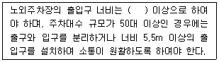
- 2.5m
- 3.0m
- 3.5m
- 4.0m
(정답률: 59%)
100. 건축물관련 건축기준의 허용오차가 옳지 않은 것은?
- 반자 높이: 2% 이내
- 출구 너비: 2% 이내
- 벽체 두께: 2% 이내
- 바닥판 두께: 3% 이내
(정답률: 52%)